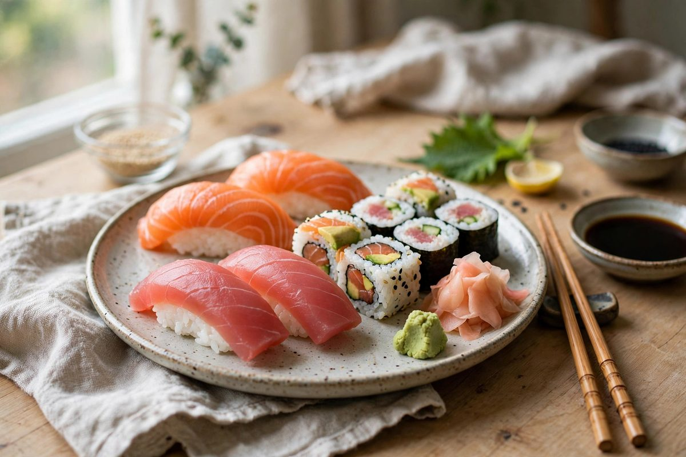
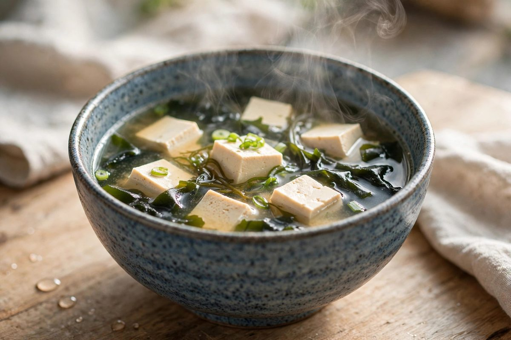
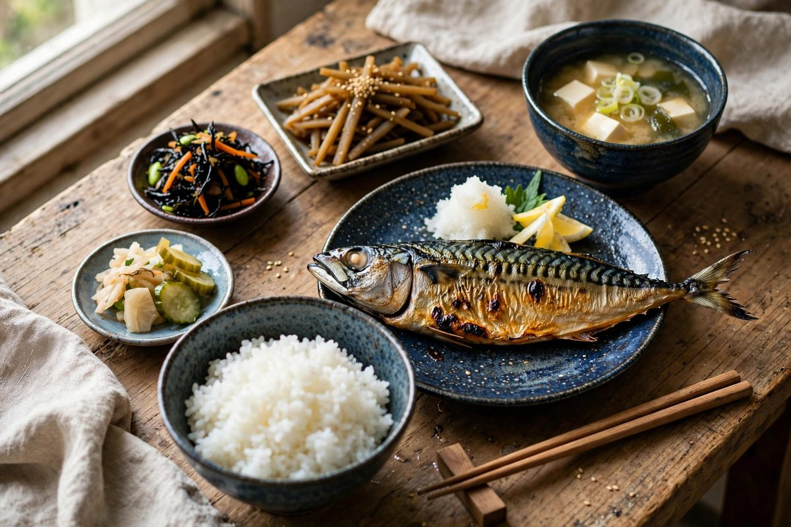
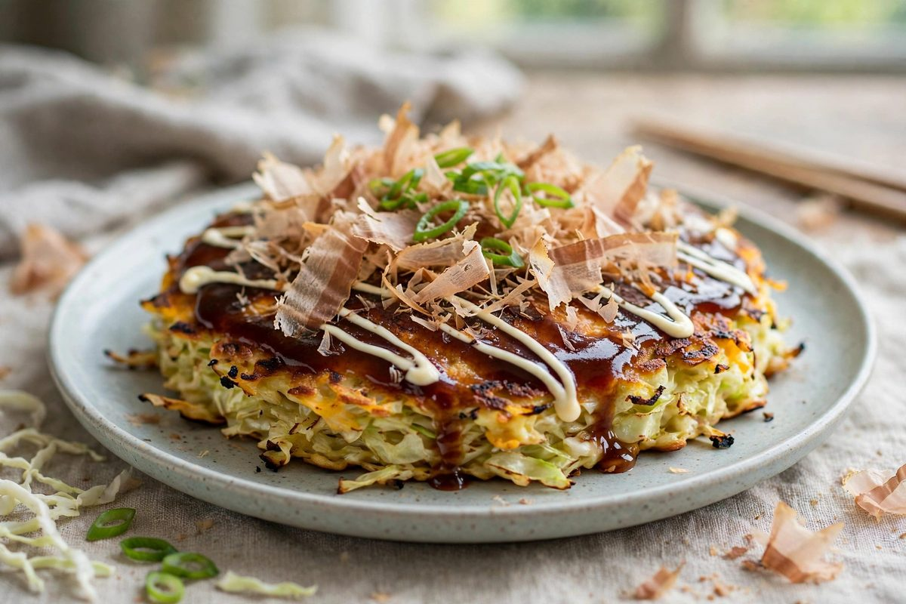
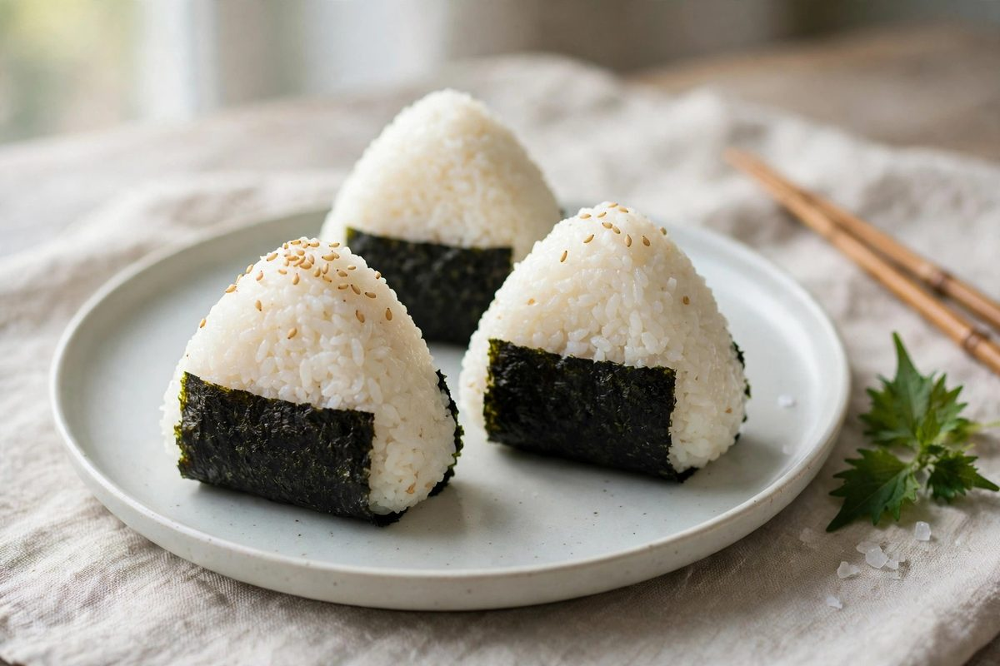
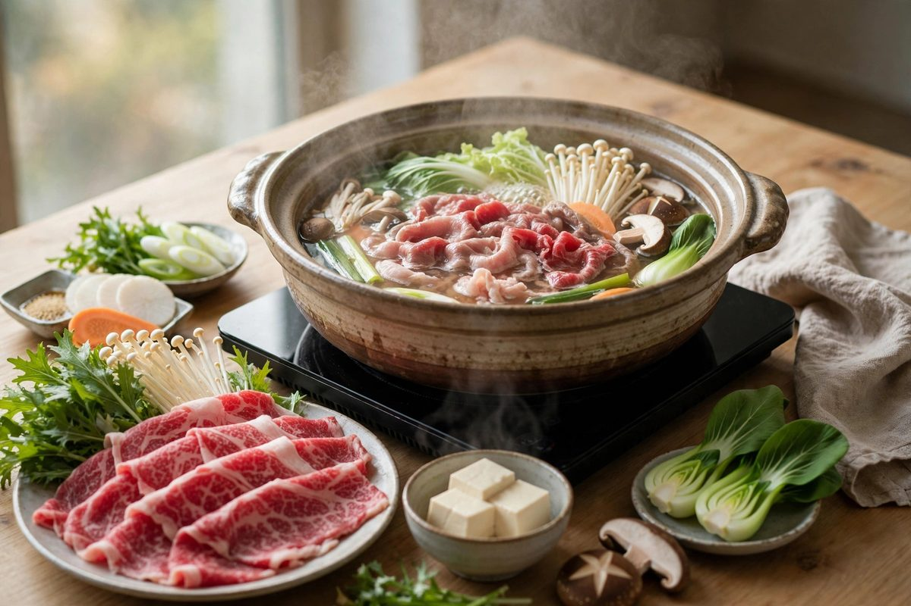
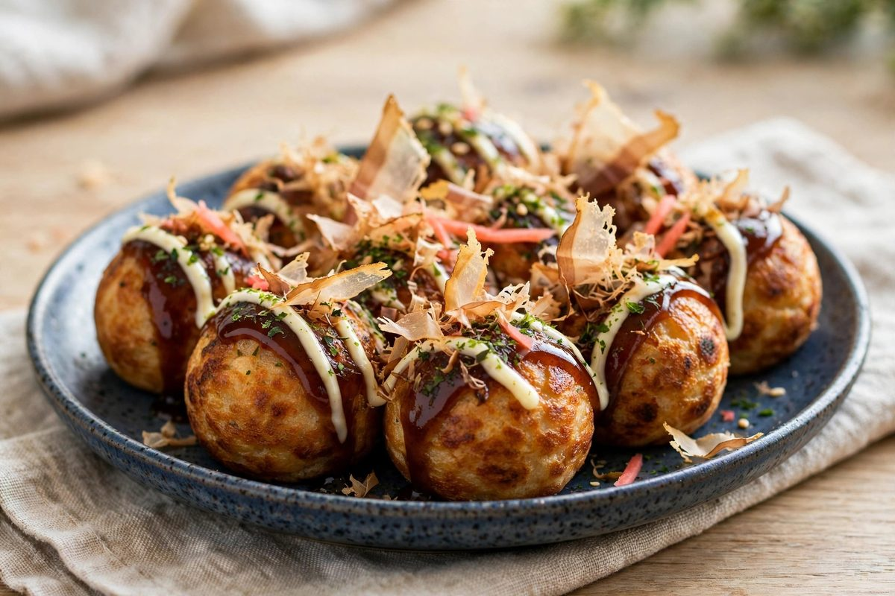
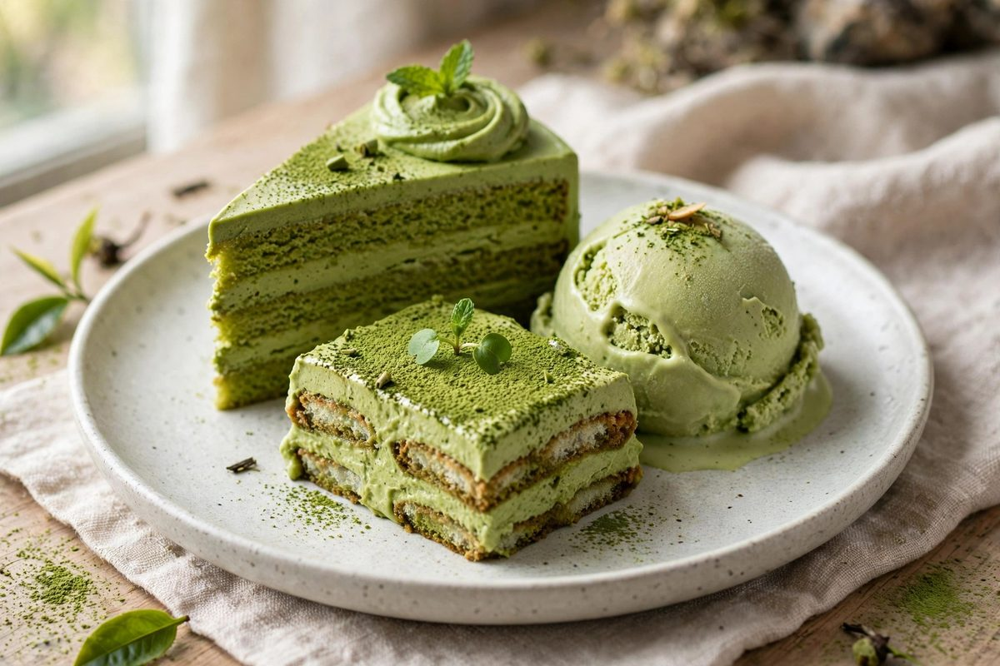
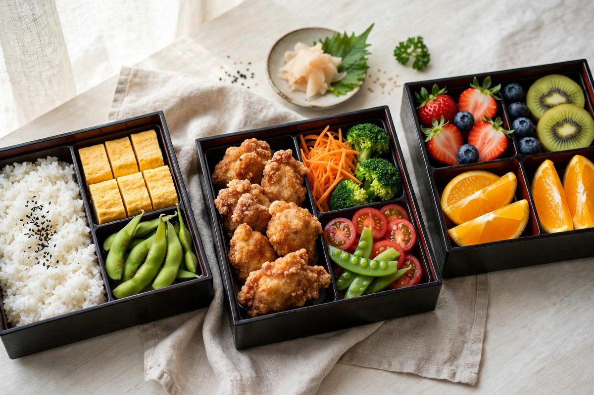
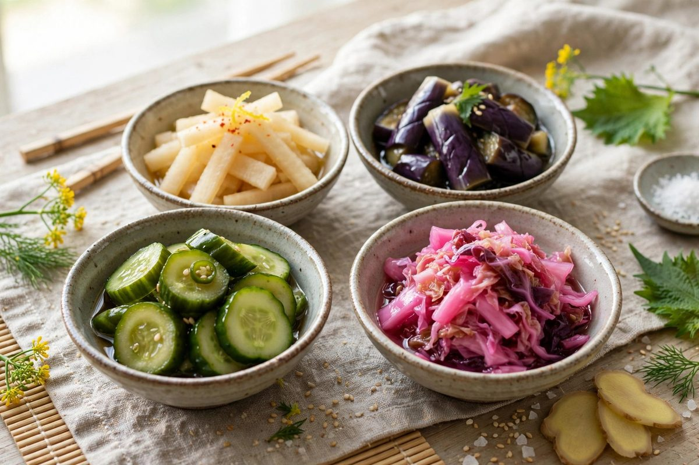

Japanese cooking, made simple
Original recipes and practical guides for sushi, ramen, miso soup, and everyday Japanese home cooking — with tools that do the measuring for you.
Kitchen Tools
Five small tools to help with everyday Japanese cooking. Everything runs in your browser; nothing is uploaded.
1. Recipe Finder
Type a word or pick a category to filter the recipes below.
- Sushi rice bowls — rice — 25 min — easy
- Shoyu ramen — noodles — 45 min — medium
- Miso soup with tofu — soup — 15 min — easy
- Chicken tempura — fried — 30 min — medium
- Teriyaki salmon — grilled — 20 min — easy
- Onigiri rice balls — rice — 20 min — easy
- Cold soba with dipping sauce — noodles — 20 min — easy
- Clear dashi soup with mushrooms — soup — 20 min — easy
2. Serving Scaler
Scale a recipe up or down. Enter the original servings, the servings you want, and one ingredient amount.
Scaled amount will appear here.
3. Rice and Water Ratio Calculator
Short-grain Japanese rice cooks best at a rice-to-water ratio of 1 to 1.2 by volume. Rinse the rice until the water runs mostly clear, then soak it for 30 minutes before cooking.
Water needed will appear here.
4. Dashi Stock Guide
Basic awase dashi uses kombu and bonito flakes. The guide below scales a standard base of 1 litre of water with 10 g kombu and 20 g bonito flakes.
Dashi amounts will appear here.
5. Sushi Rice Calculator
One cup of uncooked short-grain rice makes about 3 cups of cooked rice. Seasoned sushi rice uses about 1 tablespoon of sushi vinegar per cup of cooked rice.
Seasoning amounts will appear here.
Guides

Sushi at Home — A Beginner's GuideLearn to make sushi rice, shape nigiri and roll maki at home with simple equipment and fresh ingredients.
 Ramen at Home — Broth, Noodles and Toppings
Ramen at Home — Broth, Noodles and ToppingsA practical guide to homemade ramen: broth choices, noodle cooking, toppings, and how to build a satisfying bowl.

Miso Soup — The Everyday Japanese SoupHow to make miso soup properly: dashi, miso choice, classic ingredients, and the mistakes to avoid.
 Tempura — Light, Crisp Japanese Frying
Tempura — Light, Crisp Japanese FryingHow to make light, crisp tempura at home: batter, oil temperature, ingredient preparation, and dipping sauce.
 Teriyaki — The Sweet-Savoury Japanese Glaze
Teriyaki — The Sweet-Savoury Japanese GlazeHow to make teriyaki sauce from scratch and use it on chicken, salmon, and tofu without burning the glaze.

Japanese Home Cooking — Everyday Meals the Ichiju-Sansai WayHow everyday Japanese meals are built: one soup, three dishes, rice, and the habits that make them simple.
 Udon Noodles — Thick, Chewy and Comforting
Udon Noodles — Thick, Chewy and ComfortingHow to cook udon noodles properly, make a simple broth, and build classic bowls like kitsune and tempura udon.

Okonomiyaki — Japan's Savoury PancakeHow to make okonomiyaki at home: batter, cabbage, toppings, and the sauces that make it special.
 Tonkatsu — Crisp Japanese Pork Cutlet
Tonkatsu — Crisp Japanese Pork CutletHow to make tonkatsu with a light, crisp panko crust, plus tonkatsu sauce and serving ideas.
 Yakitori — Japanese Grilled Chicken Skewers
Yakitori — Japanese Grilled Chicken SkewersHow to make yakitori at home: chicken cuts, tare sauce, skewering, and grilling without a charcoal grill.
 Gyoza — Japanese Pan-Fried Dumplings
Gyoza — Japanese Pan-Fried DumplingsHow to make gyoza from scratch: filling, folding, frying, and the dipping sauce.

Onigiri — Japanese Rice BallsHow to make onigiri: rice, fillings, shaping, and wrapping, plus the best fillings for beginners.
- Japanese Curry — Rich, Mild and Comforting
How to make Japanese curry at home: roux blocks, vegetables, protein, and serving it properly with rice.
 Soba Noodles — Buckwheat Noodles, Hot and Cold
Soba Noodles — Buckwheat Noodles, Hot and ColdHow to cook soba noodles, make dipping sauce, and serve them hot in broth or cold with toppings.

Shabu-Shabu — Japanese Hot Pot at HomeHow to make shabu-shabu: broth, thinly sliced meat, vegetables, dipping sauces, and the finishing noodles.

Takoyaki — Osaka's Octopus BallsHow to make takoyaki at home: batter, octopus, the special pan, and the sauces and toppings.

Matcha Desserts — Green Tea Sweets at HomeHow to use matcha in desserts: choosing good matcha, matcha ice cream, cakes, and drinks.
 Japanese Breakfast — How to Start the Day the Japanese Way
Japanese Breakfast — How to Start the Day the Japanese WayWhat a traditional Japanese breakfast looks like, and how to make a simple version at home on a weekday.

Bento Boxes — Packing a Japanese Lunch BoxHow to pack a bento box: balance, colour, food safety, and easy combinations for work or school.

Japanese Pickles — Tsukemono at HomeAn introduction to Japanese pickles (tsukemono): salt pickles, miso pickles, and quick pickles you can make today.